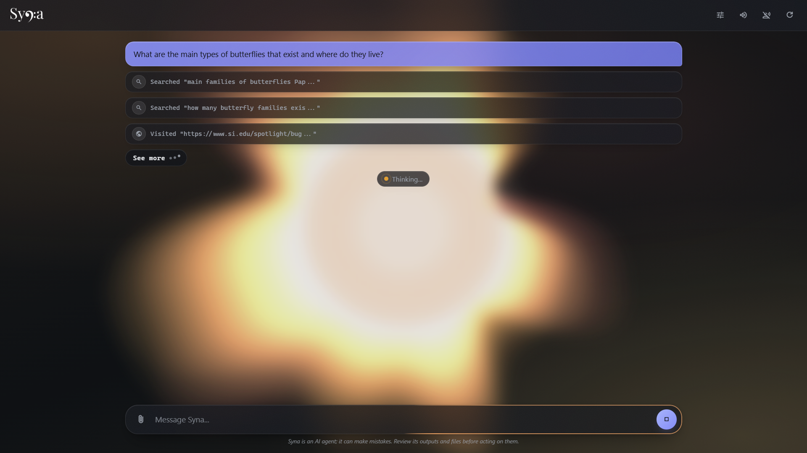

The AI Agent with a Pod
Syna researches, codes, browses the web, builds documents for you — inside a sandboxed container —, and reports back honestly.
uv tool install syna-agent

Syna researches, codes, browses the web, builds documents for you — inside a sandboxed container —, and reports back honestly.
uv tool install syna-agent

Syna has a pod, a Debian container, and her commands run inside of it. They cannot touch your actual system. She can only see what you decide to share with her. She respects your boundaries.
Syna has a browser, and native web search and web interaction tools, no API key required.
Syna has a voice; enable voice mode to talk to Syna and listen to her. She can transcribe an audio file into text, and the other way around, powered by the models of your choice.
Syna has sight; she can understand images and ensure the documents, graphs and websites she creates look amazing before sharing them with you. Say goodbye to troubleshooting broken layouts.
Syna has a canvas, and your favorite model is the brush. Ask her to paint something for you, and she will take care of the rest.
Syna has principles. She knows how to do her research, supports her answers with sources, and verifies her own work.
Syna has a pen, and her notebooks have an index. Long files don't scare her, she can locate the exact line that needs to change, and replace it without having to read the entire file and spit it out like a maniac.
Syna has a control panel, and it's a gift for you. Customize everything. Don't want voice mode or image generation? Disable them, they'll stay off.
Syna has patience. She is ready for long and complex tasks. When her workspace gets cluttered, she doesn't panic, she tidies up. She uses elision, compaction, and caching to keep your bills low and make every token count.
Syna has connections. OpenRouter is her best friend, but she also works with OpenAI, Google Gemini, local Ollama, or any OpenAI-compatible endpoint. Pick your favorite.
Syna is a star, and she looks like one. She pulses in the background as she works, changes colors, and thinks in polytones. She knows the agent of the future shouldn't look like a gray chat.
Two minutes of setup, then give Syna something hard.